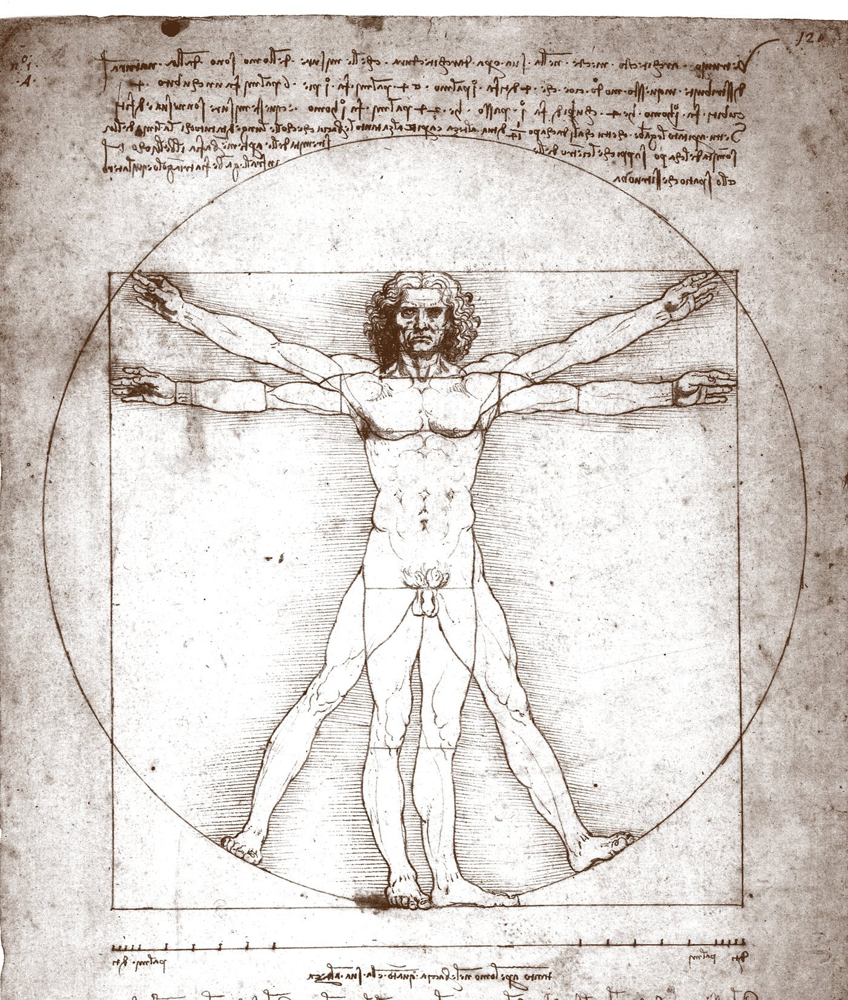
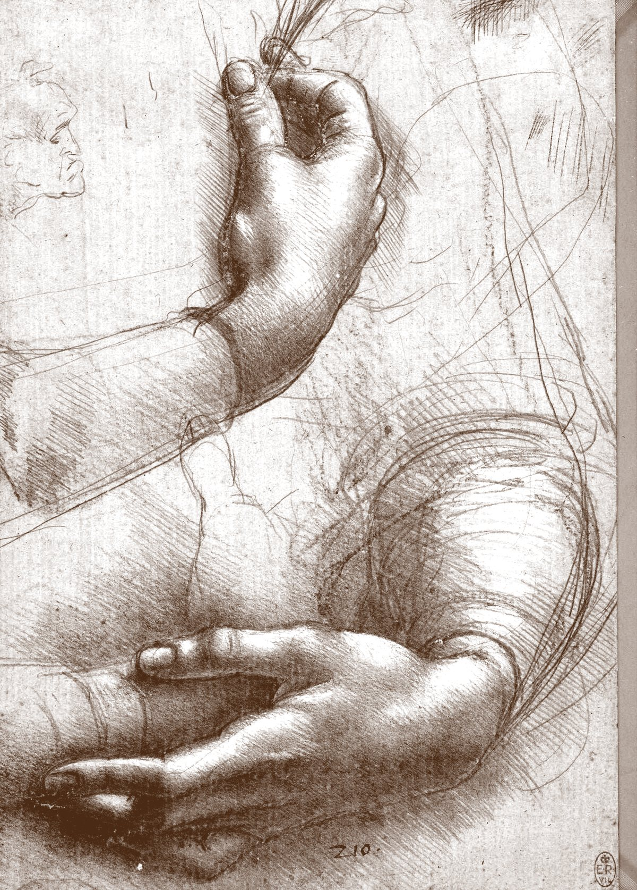

Quaderno
Pocket小本
$0 / forever/ 一直免费
- Five core proportions五个基本比例
- One measure a month每月量一次
- Margin notes in two languages中英双语批注
Mensura reads one photo of you and finds the same lines Leonardo drew in 1490: the square, the circle, the eighth of a head. Thirty measurements, good to a finger's width, with notes in the margin. 拍一张照片，Mensura 就能在你身上找到达·芬奇 1490 年画下的那几条线：方、圆、八分之一个头。三十个尺寸，误差不到一根手指宽，旁边还会写上批注。

In Leonardo's units everyone is the same: 24 palms tall.换成达·芬奇的单位，每个人都一样高：24 掌。
Leonardo drew hands until he understood them. Mensura does the reading for you: point at a joint, or at a note, and the leader line finds its partner.达·芬奇画手，画到看懂为止。Mensura 替你读：指一个关节，或者指一条批注，引线会自己连过去。

Leonardo found the centre of the skull by crossing two lines. Mensura works the same way, in the same order, on your photo.达·芬奇找头骨的中心，靠的是两条交叉的线。Mensura 在你的照片上，也按同样的顺序来。
From one photo, Mensura marks where you begin and end, top to toe and fingertip to fingertip. Your phone held at arm's length is enough.一张照片里，Mensura 先标出你从哪到哪：头顶到脚底，指尖到指尖。手机拿在一臂远的地方就够了。
A level line and a plumb line, crossed where Leonardo crossed them. Every other measure hangs off that point, so tilt and distance stop mattering.一条水平线，一条铅垂线，在达·芬奇交叉的地方交叉。其余尺寸都从这个点量起，照片拍歪一点、远一点都没关系。
Thirty numbers are not advice. Mensura writes the three that matter next to the part they belong to, like a notebook, not a dashboard.三十个数字不等于建议。Mensura 只挑三条要紧的，写在对应部位旁边，像笔记本，不像仪表盘。
All three keep your photos on your phone. Only the measurements, never the picture, leave the device.三种都把照片留在你手机里。离开手机的只有尺寸，从来不是照片。
Then cut, run, sew, or simply stand a little straighter.然后裁衣、跑步、缝纫，或者只是站得直一点。
Get Mensura下载 Mensura